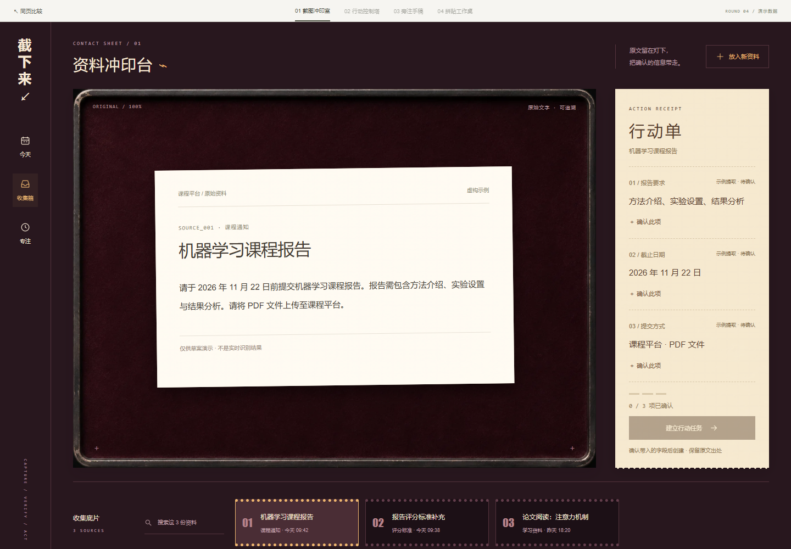
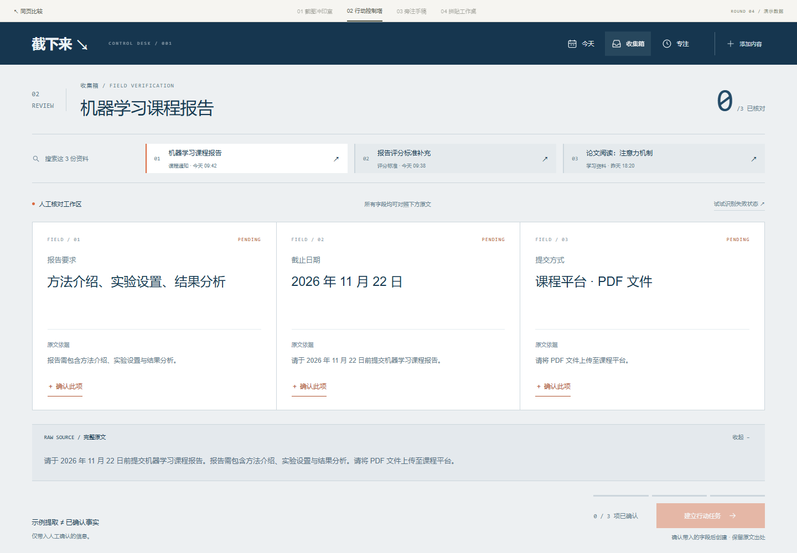
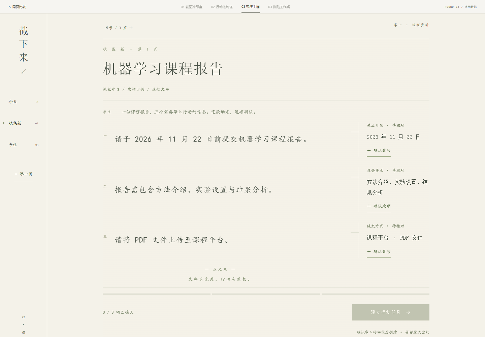
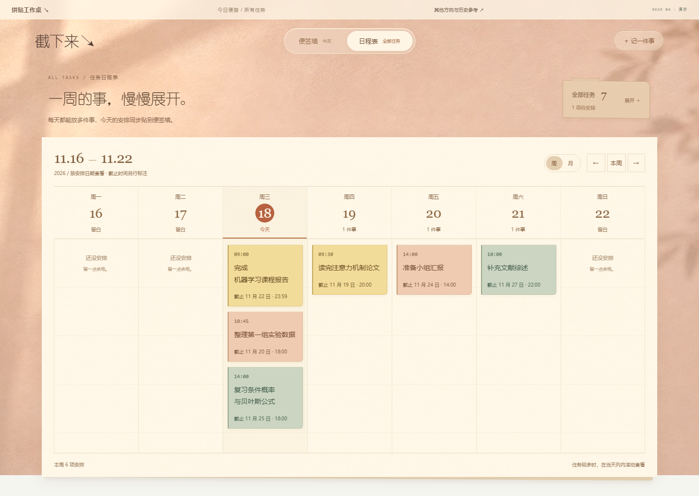

当前维护方向 · CUT & KEEP
拼贴工作桌
今日便签墙 · 宽幅周日程 · 可展开任务夹 · 保留月视图
DESIGN REFERENCES / 历史探索
保留探索，
继续拼贴方向。
拼贴工作桌改为今日便签与所有任务的周日程。
另外三套保留历史版本，供回看设计语言。拼贴 DESK 05 / 其余 R4 · 虚构演示数据
历史第四轮改进与第三轮独立评审
新增暗房托盘与棉纸材质；加深关键文字；确认后保持位置与键盘焦点；联动原文依据；手机导航避让；拼贴支持方向键移动。
以下为第三轮修改前的静态基线评审，统一满分95；动画5分待验证。第四轮未重新评分。
| 方案 | 评审A | 评审B | 评审C | 平均 | 范围 |
|---|---|---|---|---|---|
| 截图冲印室 | 86 | 85 | 87 | 86.0 | 85–87 |
| 行动控制塔 | 85 | 83 | 83 | 83.7 | 83–85 |
| 旁注手稿 | 83 | 84 | 83 | 83.3 | 83–84 |
| 拼贴工作桌 | 84 | 85 | 86 | 85.0 | 84–86 |
历史方向与当前拼贴含不同内容，不作同条件评分
截图冲印室
CONTACT ROOM
CONTACT ROOM

行动控制塔
CONTROL DESK
CONTROL DESK

旁注手稿
MARGINALIA
MARGINALIA

拼贴工作桌
CUT & KEEP
CUT & KEEP

拼贴方向：「今天」为便签墙，「日程表」展示所有任务，默认周视图、可切月视图。所有任务均为临时演示数据，刷新即重置。